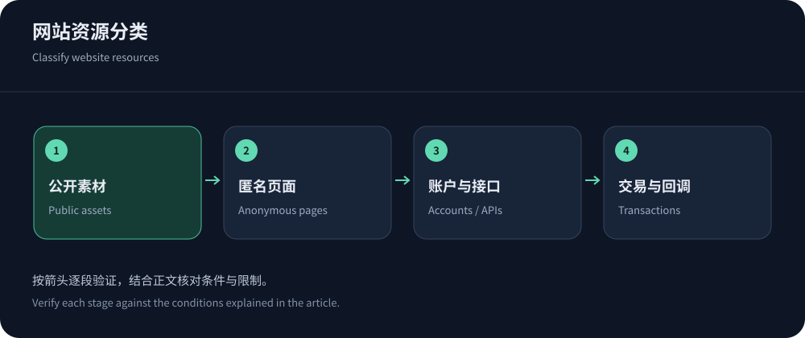
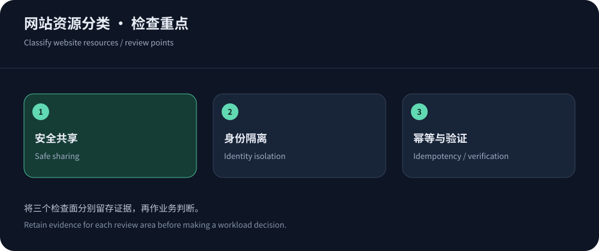

Identify the most costly website failure
The most expensive failure may be unreadable pages, unavailable search, broken login or missed payment callbacks. These require different policies and recovery priorities. Evaluate CDN5 where its Chinese-language support and bundles fit, then compare suitable alternatives rather than inferring requirements from site size.
Low traffic does not imply low risk. A static blog can keep work at the edge, while a few transactional requests can consume databases. Audit exposed origins, administration, backups and logs before buying the largest tier. Define successful business operations, correct content and recoverability as acceptance outcomes.
Classify resources for cache and security controls
Use RFC 9111 to distinguish shared-cache workloads. The table classifies resources rather than prescribing universal policies. Choose TTLs and exceptions around update frequency and correctness, then test with separate identities.
| Path type | Risk or cost | Control direction |
|---|---|---|
| Versioned images/scripts | Delivery and misses; renaming/purges cause refill. | Use versioned assets, suitable TTLs, integrity and publication ordering. |
| Anonymous pages | Freshness, rendering and query fragmentation. | Use content-relevant keys, freshness and targeted purging. |
| Login/account | Identity leaks, session failures and authentication work. | Avoid shared caching by default; validate identity headers and path-specific policies. |
| Search/export | Low request volume can still create expensive processing. | Use identity/cost-aware limits plus indexes, queues and concurrency budgets. |
| Orders/payment callbacks | Retries, missed/duplicate work and nonbrowser clients. | Authenticate and make operations idempotent; use auditable client-compatible exceptions. |
| Administration | Origin exposure and privileged entrances. | Isolate administrative access; frontend protection is not server-wide coverage. |


Include historical entrances and IPv6
Historical DNS, mail or subdomains may still expose an old origin after DNS changes. Direct requests bypass edge caching and WAF. Inventory business ports, administration, IPv6 and legitimate checks, restricting ingress to trusted paths. Maintain allowlists when provider addresses change.
Trust client-IP headers only from known proxies, verify origin certificates/Host and supported authentication, and preserve checks and emergency access. Plan reversible changes with the buying guide rather than waiting for a bypass incident.
CC controls should preserve legitimate access
Cloudflare rate rules illustrate matching and counting dimensions. Identify paths, methods, identities and origin work. Identical limits for cached images and expensive search can be inefficient and harm normal browsing. Validate shared egress, crawlers, SDKs and callbacks.
Observe first, enforce narrowly and track legitimate success, challenge outcomes and origin queues. Adjust affected identities/routes instead of disabling everything. The CC guide explains the interaction of edge detection, application limits and origin capacity.
A website can have different cost priorities
Downloads and imagery are often delivery/fill-cost dominated; transactions or APIs can be request, security, database and support dominated. Model ordinary and incident months separately, including blocked requests, logs, switching and over-limit behavior. Verify CDN5 allowances and Cloudflare tier eligibility rather than assuming unlimited resources.
Validate business outcomes in the pilot
The pilot must deliver correct pages, maintain identity isolation and complete critical tasks. Test hits, cold fetches, login, orders, callbacks and updates, tracking errors/P95 by real regions and carriers. HTTP 200 with wrong content is a failure. Missing traceable logs increase diagnosis cost.
CloudFront cache-key documentation helps explain request dimensions. The lab supplies local evidence, not full production acceptance. Limit changed variables and preserve protected rollback.


Record upgrade and exit conditions
Recommendations should state their prerequisites: supported protocols, verified paths, isolated origins, manageable false positives and explainable fees. If a requirement fails, select another product or combination. There is no universal security-spend-to-downtime formula.
Review at renewal, expansion, growth or new client releases. Preserve configuration export, certificate renewal, logs and escalation; revoke obsolete access at exit. A reliable architecture protects critical tasks and supports diagnosis and recovery, beyond a fast homepage.